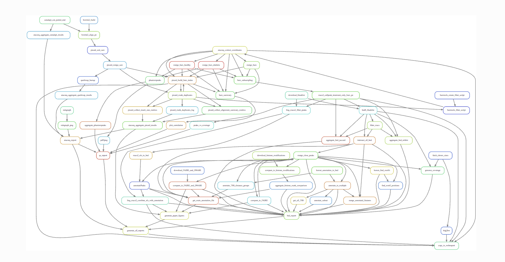

Building Bioinformatics Pipelines with Snakemake¶
A workflow management system (WMS) is a piece of software that sets up, performs and monitors a defined sequence of computational tasks (i.e. “a workflow”). Snakemake is a WMS that was developed in the bioinformatics community, and as such it has some features that make it particularly well suited for creating reproducible and scalable data analyses.
- The language you use to formulate your workflows is based on Python, which is a language with strong standing in academia. However, users are not required to know how to code in Python to work efficiently with
Snakemake. - Workflows can easily be scaled from your desktop to server, cluster, grid or cloud environments. This makes it possible to develop a workflow on your laptop, maybe using only a small subset of your data, and then run the real analysis on a cluster.
Snakemakehas several features for defining the environment which each task is carried out in. This is important in bioinformatics, where workflows often involve running a large number of small third-party tools.Snakemakeis primarily intended to work on _files_ (rather than for example streams, reading/writing from databases or passing variables in memory). This fits well with many fields of bioinformatics, notably next-generation sequencing, that often involve computationally expensive operations on large files. It’s also a good fit for a scientific research setting, where the exact specifications of the final workflow aren’t always known at the beginning of a project.- Lastly, a WMS is a very important tool for making your analyses reproducible. By keeping track of when each file was generated, and by which operation, it is possible to ensure that there is a consistent “paper trail” from raw data to final results. Snakemake also has features which allow you to package and distribute the workflow, and any files it involves, once it’s done.
The basics¶
Activating snakemake environment within the VM¶
In the tutorial virtual machine, snakemake is installed within a python3.5 environment. Activate the environment as follows:
source activate snakemake
# check is snakemake is available
snakemake -h
Create a directory to hold our work:
mkdir -p ~/mtb_genomics_workshop/snakemake/example
cd ~/mtb_genomics_workshop/snakemake/example
In this part of the tutorial we will create a very simple workflow from scratch, in order to show the fundamentals of how Snakemake works. The workflow will take two files as inputs, a.txt and b.txt, and the purpose is to convert the text in the files to upper case and then to concatenate them.
Run the following shell commands. The first one will make an empty file named Snakefile, which will later contain our example workflow. The second and third commands generate two files containing some arbitrary text.
touch Snakefile
echo "This is a.txt" > a.txt
echo "This is b.txt" > b.txt
Then open Snakefile in a text editor. You can use SublimeText, which you can invoke from command line with subl:
subl Snakefile
Rules¶
A Snakemake workflow is based on rules which take some file(s) as input, performs some type of operation on them, and generate some file(s) as outputs. Here is a very simple rule that takes a.txt as an input and produces a.upper.txt as an output. Copy this rule to your Snakefile and save it.
rule convert_to_upper_case:
input:
"a.txt"
output:
"a.upper.txt"
shell:
"tr [a-z] [A-Z] < {input} > {output}"
Important
Indentation is important in Snakefiles, so make sure that you have the correct number of spaces before input/output/shell and their respective subsections. The number of spaces per level doesn’t matter as long as you’re consistent. Here we use four, but you could just as well use two for a more compact look. Don’t use tabs (unless your editor automatically converts them to spaces).
- A rule has a name, here it’s convert_to_upper_case. Make an effort to name your rules in a way that makes it easy to understand. The purpose of the rule, as rule names, are one of the main ways to interact with the workflow.
- The shell section contains the shell commands that will convert the text in the input file to upper case and send it to the output file. In the shell command string, we can refer to elements of the rule via curly brackets. Here, we refer to the output file by specifying {output} and to the input file by specifying {input}. This particular command can be read like “send the contents of a.txt to the program tr, which will convert all characters in the set [a-z] to the corresponding character in the set [A-Z], and then send the output to a.upper.txt”.
Now let’s run our first Snakemake workflow. When a workflow is executed Snakemake tries to generate a set of target files. Target files can be specified via the command line (or, as you will see later, in several other ways). Here we ask Snakemake to make the file a.upper.txt. It’s good practice to first run with the flag –dryrun`(or `-n), which will show what Snakemake plans to do without actually running anything. You can also use the flag –printshellcmds (or -p, for showing the shell commands that it will execute, and the flag –reason (or -r for showing the reason for running a specific rule. snakemake –help will show you all available flags.
Do a dry-run:
snakemake --dryrun --reason --printshellcmds a.upper.txt
Building DAG of jobs...
Job counts:
count jobs
1 convert_to_upper_case
1
rule convert_to_upper_case:
input: a.txt
output: a.upper.txt
jobid: 0
reason: Missing output files: a.upper.txt
tr [a-z] [A-Z] < a.txt > a.upper.txt
Job counts:
count jobs
1 convert_to_upper_case
1
You can see that Snakemake plans to run 1 job: the rule convert_to_upper_case with a.txt as input and a.upper.txt as output. The reason for doing this is that it’s missing the file a.upper.txt.
Now execute the workflow without the –dryrun flag and check that the contents of a.upper.txt is as expected. Then try running the same command again. What do you see? It turns out that Snakemake only reruns jobs if one of the input files is newer than one of the output files, or if one of the input files will be updated by another job. This is how Snakemake ensures that everything in the workflow is up to date.
Wildcards¶
We are going to next introduce the concept of wildcards in snakemake. What if we ask Snakemake to generate the file b.upper.txt?
$ snakemake --dryrun --reason --printshellcmds b.upper.txt
Building DAG of jobs...
MissingRuleException:
No rule to produce b.upper.txt (if you use input functions make sure that they don't raise unexpected exceptions).
That didn’t work. We could copy the rule to make a similar one for b.txt, but that would be a bit cumbersome. Here is where named wildcards come in; one of the most powerful features of Snakemake. Simply change the input from input: “a.txt” to input: “{some_name}.txt” and the output to output: “{some_name}.upper.txt”.
Your updated Snakefile should look as follows:
rule convert_to_upper_case:
input:
"{some_name}.txt"
output:
"{some_name}.upper.txt"
shell:
"tr [a-z] [A-Z] < {input} > {output}"
Now try asking for b.upper.txt again:
$ snakemake b.upper.txt
Building DAG of jobs...
Using shell: /usr/bin/bash
Provided cores: 1
Rules claiming more threads will be scaled down.
Job counts:
count jobs
1 convert_to_upper_case
1
rule convert_to_upper_case:
input: b.txt
output: b.upper.txt
jobid: 0
wildcards: some_name=b
Finished job 0.
1 of 1 steps (100%) done
Complete log: /home/mtb_upm/mtb_genomics_workshop/snakemake/example/.snakemake/log/2018-07-05T134652.700927.snakemake.log
What happens here is that Snakemake looks at all the rules it has available (actually only one in this case) and tries to assign values to all wildcards so that the targeted files can be generated. In this case it was quite simple, you can see that it says that wildcards: some_name=b, but for large workflows and multiple wildcards it can get much more complex. Named wildcards is what enables a workflow (or single rules) to be efficiently generalized and reused between projects or shared between people and make scaling up computational workflows feasible.
It seems we have the first part of our workflow working, now it’s time to make the second rule for concatenating the outputs from convert_to_upper_case. The rule structure will be similar; the only difference is that here we have two inputs instead of one. This can be expressed in two ways, either with named inputs like this:
input:
firstFile="...",
secondFile="..."
shell:
some_function {input.firstFile} {input.secondFile}
Or with indices like this:
input:
"...",
"..."
shell:
some_function {input[0]} {input[1]}
Important
If you have multiple inputs or outputs they need to be delimited with a comma (as seen above). This is a very common mistake when writing Snakemake workflows. The parser will complain, but sometimes the error message can be difficult to interpret.
Now try to construct this rule yourself and name it concatenate_a_and_b. The syntax for concatenating two files in Bash is cat first_file second_file > output_file. Call the output c.txt. Run the workflow in Snakemake and validate that the output looks as expected.
Wouldn’t it be nice if our workflow could be used for any files, not just a.txt and b.txt? We can achieve this by using named wildcards (or in other ways as we will discuss later). As we’ve mentioned, Snakemake looks at all the rules it has available and tries to assign values to all wildcards so that the targeted files can be generated. We therefore have to name the output file in a way so that it also contains information about which input files it should be based on. Try to figure out how to do this yourself.
Rename the rule to concatenate_files to reflect its new more general use.
rule concatenate_files:
input:
"{first}.upper.txt",
"{second}.upper.txt"
output:
"{first}_{second}.txt"
shell:
"cat {input[0]} {input[1]} > {output}"
We can now control which input files to use by the name of the file we ask Snakemake to generate.
$ snakemake a_b.txt
Building DAG of jobs...
Using shell: /usr/bin/bash
Provided cores: 1
Rules claiming more threads will be scaled down.
Job counts:
count jobs
1 concatenate_files
1 convert_to_upper_case
2
rule convert_to_upper_case:
input: a.txt
output: a.upper.txt
jobid: 2
wildcards: some_name=a
Finished job 2.
1 of 2 steps (50%) done
rule concatenate_files:
input: a.upper.txt, b.upper.txt
output: a_b.txt
jobid: 0
wildcards: second=b, first=a
Finished job 0.
2 of 2 steps (100%) done
Complete log: /home/mtb_upm/mtb_genomics_workshop/snakemake/example/.snakemake/log/2018-07-05T135145.499632.snakemake.log
What we have learned so far:
* How a simple Snakemake rule looks
* How to define target files when executing a workflow
* How to use named wildcards for writing generic and flexible rules.
Tip
You can name a file whatever you want in a Snakemake workflow, but you will find that everything makes much more sense if the filename reflects the file’s path through the workflow, e.g. sample_a.trimmed.deduplicated.sorted.bam.
Visualization, logging and workflow management¶
What we’ve done so far could have been quite easily done in a simple shell script that takes the input files as parameters. Let’s now take a look at some of the features where Snakemake really adds value compared to a more straightforward approach. One such feature is the possibility to visualize your workflow.
Snakemake can generate two types of graphs:
- rules graph that shows how the rules are connected
- jobs graph that shows how the jobs (i.e. an execution of a rule with some given inputs/outputs/settings) are connected.
Rule graph: First we look at the rule graph. The following command will generate a rule graph in the dot language and pipe it to the program dot, which in turn will save a visualization of the graph as a png file (if you’re having troubles displaying png files you could use svg or jpg instead).
snakemake --rulegraph a_b.txt | dot -Tpng > rulegraph.png
All the graph says is that the output from the rule convert_to_upper_case will be used as input to the rule concatenate_files. For a more typical bioinformatics project it can look something like this:
Job graph: The second type of graph is based on the jobs, and looks like this for our little workflow (use –dag instead of –rulegraph).
snakemake --dag a_b.txt | dot -Tpng > jobgraph.png
The main difference here is that now each node is a job instead of a rule. You can see that the wildcards used in each job are also displayed. Another difference is the dotted lines around the nodes. A dotted line is Snakemake’s way of indicating that this rule doesn’t need to be rerun in order to generate a_b.txt. Validate this by running snakemake -n -r a_b.txt and it should say that there is nothing to be done.
We’ve discussed before that one of the main purposes of using a WMS is that it automatically makes sure that everything is up to date. This is done by recursively checking that outputs are always newer than inputs for all the rules involved in the generation of your target files.
Now try to change the contents of a.txt to some other text and save it. What do you think will happen if you run snakemake -n -r a_b.txt again?
$ snakemake -n -r a_b.txt
rule convert_to_upper_case:
input: a.txt
output: a.upper.txt
jobid: 2
reason: Updated input files: a.txt
wildcards: some_name=a
rule concatenate_files:
input: a.upper.txt, b.upper.txt
output: a_b.txt
jobid: 0
reason: Input files updated by another job: a.upper.txt
wildcards: first=a, second=b
Job counts:
count jobs
1 concatenate_files
1 convert_to_upper_case
2
```
Also generate the job graph and compare to the one generated above. What’s the difference?
Now rerun without -n and validate that a_b.txt contains the new text. Note that Snakemake doesn’t look at the contents of files when trying to determine what has changed, only at the timestamp for when they were last modified.
We’ve seen that Snakemake keeps track of if files in the workflow have changed, and automatically makes sure that any results depending on such files are regenerated. What about if the rules themselves are changed? It turns out that there are multiple ways to do this, but the most straightforward is to manually specify that you want to rerun a rule (and thereby also all the steps between that rule and your target). Let’s say that we want to modify the rule concatenate_files to also include which files were concatenated.
rule concatenate_files:
input:
"{first}.upper.txt",
"{second}.upper.txt"
output:
"{first}_{second}.txt"
shell:
"echo 'Concatenating {input}' | cat - {input[0]} {input[1]} > {output}""
If you now run the workflow as before you should get “Nothing to be done”, because no files involved in the workflow have been changed. Instead we have to force Snakemake to rerun the rule by using the `-R`flag. Let’s try a dry-run.
snakemake a_b.txt -r -n -R concatenate_files
Note that the reason for the job is now “Forced execution”. You can target files as well as rules, so you would get the same result with -R a_b.txt. Whenever you’ve made changes to a rule that will affect the output it’s good practice to force re-execution like this. Still, there can be situations where you don’t know if any rules have been changed. Maybe several people collaborate on the same workflow but are using it on different files for example. Snakemake keeps track of how all files were generated (when, by which rule, which version of the rule, and by which commands). You can export this information to a tab-delimited file like this:
snakemake a_b.txt -D > summary.tsv
The contents of summary.tsv is shown in the table below (scroll to see the full table).
| output_file | date | rule | version | log-file(s) | input-file(s) | shellcmd | status | plan |
|---|---|---|---|---|---|---|---|---|
| a_b.txt | Thu Nov 16 12:03:11 2017 | concatenate_files | a.upper.txt,b.upper.txt | cat a.upper.txt b.upper.txt > a_b.txt | rule implementation changed | no update | ||
| a.upper.txt | Thu Nov 16 12:03:11 2017 | convert_to_upper_case | a.txt | tr [a-z] [A-Z] < a.txt > a.upper.txt | ok | no update | ||
| b.upper.txt | Thu Nov 16 12:03:11 2017 | convert_to_upper_case | b.txt | tr [a-z] [A-Z] < b.txt > b.upper.txt | ok | no update |
You can see in the second last column that the rule implementation for a_b.txt has changed. The last column shows if Snakemake plans to regenerate the files when it’s next executed. None of the files will be regenerated because Snakemake doesn’t regenerate files by default if the rule implementation changes. From a reproducibility perspective maybe it would be better if this was done automatically, but it would be very computationally expensive and cumbersome if you had to rerun your whole workflow every time you fix a spelling mistake in a comment somewhere. So, it’s up to us to look at the summary table and rerun things as needed. You can get a list of the files for which the rule implementation has changed, and then force Snakemake to regenerate these files with the -R flag.
snakemake a_b.txt -R $(snakemake a_b.txt --list-code-changes)
There are a number of these –list-xxx-changes flags that can help you keep track of your workflow. You can list all options with snakemake –help. Run with the -D flag again to make sure that the summary table now looks like expected.
You might wonder where Snakemake keeps track of all these things? It stores all information in a hidden subdirectory called .snakemake. This is convenient since it’s easy to delete if you don’t need it anymore and everything is contained in the project directory.
By now you should be familiar with the basic functionality of Snakemake, and you can build advanced workflows with only the features we have discussed here. There’s a lot we haven’t covered though, in particular when it comes to making your workflow more reusable. In the following section we will start with a workflow for calling variants.
We’ve learned:
- How to use –dag and –rulegraph for visualizing the job and rule graphs, respectively.
- How to force Snakemake to rerun relevant parts of the workflow after there have been changes.
- How logging in Snakemake works.
Reference: Koster, J. and Rahmann, S. (2012). Snakemake–a scalable bioinformatics workflow engine. Bioinformatics, 28(19), 2520–2522.
Resources:
- The
Snakemakedocumentation - Here is the official tutorial
- Further questions? Check out stack overflow_.
- There is a
snakemakeGooglegroups.
Credit: NBIS Reproducible research course.